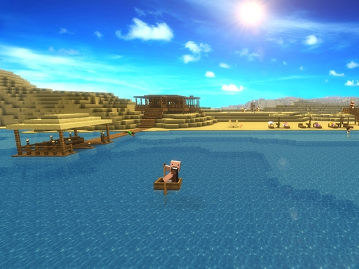

GAME ACCOUNT
还没有账户，可添加离线账户或使用 LittleSkin 外置登录。
支持英文字母、数字和下划线。
仅用于支持 LittleSkin 外置登录的服务器，不能替代正版验证。
VERSION MANAGER
点击刷新以获取 Minecraft 版本列表
LAUNCH OPTIONS
游戏文件将生成在启动器所在目录的 .minecraft 文件夹中。
自动模式会进行多连接真实测速，并在持续低速时切换备用线路。
正在读取更新状态…
JAVA RUNTIME
启动 Minecraft 需要 Java 运行环境。当前未在系统中检测到可用的 Java，请先安装后再继续使用启动器。
推荐安装 AZUL Zulu JDK（免费）或 Oracle JDK，版本 17 或更高。